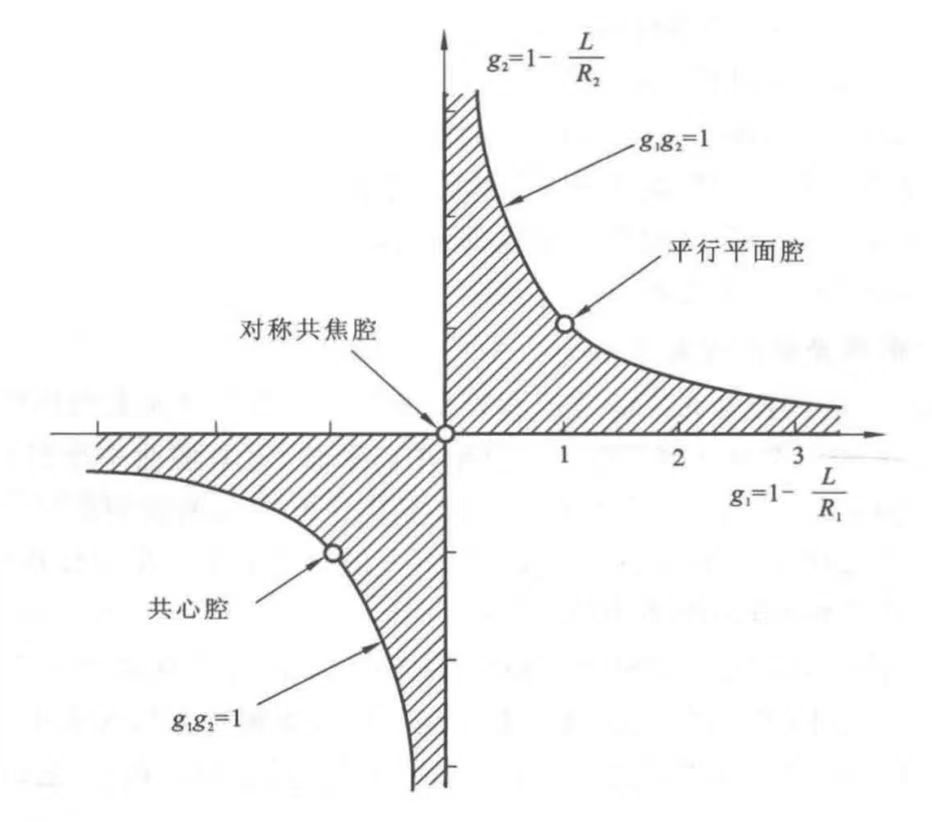

控制腔内光束的纵向分布特性，使大量光子集结在谐振腔所限制的少数几个模式中，从而提高光子的简并度，获得单色性好，方向性腔的相干光。
控制激光束的横向分布特性，影响光束的光斑尺寸，横模及光束的发散角等。
改变腔内光束的损耗（不同的腔镜几何结构还能改变腔内的几何偏折损耗），在增益一定的情况下通过改变输出耦合率来实现对激光器的控制。
| 光学谐振腔的分类 | ||
| 开腔 | 根据几何偏折损耗的高低分 | 稳定腔 |
| 非稳腔 | ||
| 临界腔 | ||
| 根据结构分 | 共轴腔 | |
| 非共轴腔 | ||
| 半封闭腔 | ||
侧面没有光学边界，且其轴向尺寸（腔长）远大于产生振荡的光波波长，一般也远大于光腔的横向尺寸（反射镜的尺度）.
由两块平行平面反射镜组成.
由两块具有公共轴线的球面反射镜组成.
稳定腔的几何偏折损耗很低，绝大多数中、小功率器件都采用稳定腔.
采用稳定腔的激光器发出的激光，将以高斯光束的形式在空间传输.

| 选择损耗 | 几何偏折损耗 |
| 衍射损耗 | |
| 非选择损耗 | 腔镜反射不完全引起的损耗 |
| 材料中的非激活吸收、散射；腔内插入物（布儒斯特窗、调Q元件、调制器等）引起的损耗；其他损耗 |
随腔内自再现模式的横模特性变化的损耗.
与光波模式无关的损耗.
设初始光强为\(I_0\)，在腔内往返一周后，光强衰减为：
$$I = I_0e^{-2\delta}$$则平均单程损耗因子为：
$$\delta = \frac{1}{2}\ln\frac{I_0}{I}$$若损耗是由多种因素引起的，每一种损耗可用相应的损耗因子\(\delta_i\)描述，则总损耗因子：
$$\delta = \sum\delta_i$$1、谐振腔应该具有较小的能量损耗，能够提供足够的正反馈，使激光器能够达到预期的能量输出.
2、谐振腔应该具有好的模式鉴别能力，能够提供单色性、相干性和方向性均能达到预期要求的激光束，并能通过调整腔的几何参数有效控制光束特性.
对于增益较低的中、小功率激光器：为了易于产生振荡，选择低损耗的稳定腔.
对于高增益、高功率激光器：为了实现有效的能量提取和获得高质量的输出光束，选择非稳腔.
指的是光在光学谐振腔内传播时，由于谐振腔结构和反射镜的配置，光束能够在腔内沿特定路径反射多次后回到初始位置，形成一个闭合的路径。这一现象确保了光能够在谐振腔内来回反射，并不断与增益介质相互作用，从而维持激光振荡。
电磁场理论表明，当存在一定边界条件约束时，电磁场只能稳定存在于一系列分立的本征态中，这些本征态的振荡频率、空间频率各不相同.
光腔的模式，可以分为纵向模式（纵模）与横向模式（横模）两种.
纵模描述：本征态模式在光腔纵向方向（光轴方向）上的分布，以不同的振荡频率来区分不同的纵模.
横模描述：本征态模式在横向平面（垂直于光轴的平面）上的分布，以电磁场不同的空间分布特性来区分不同的横模.